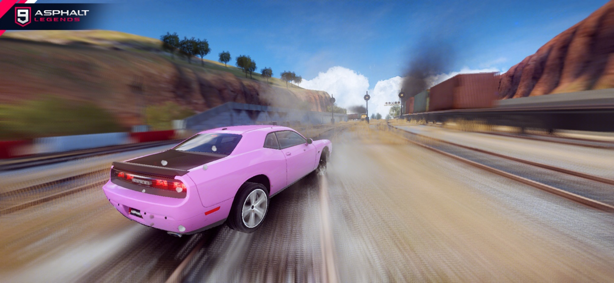
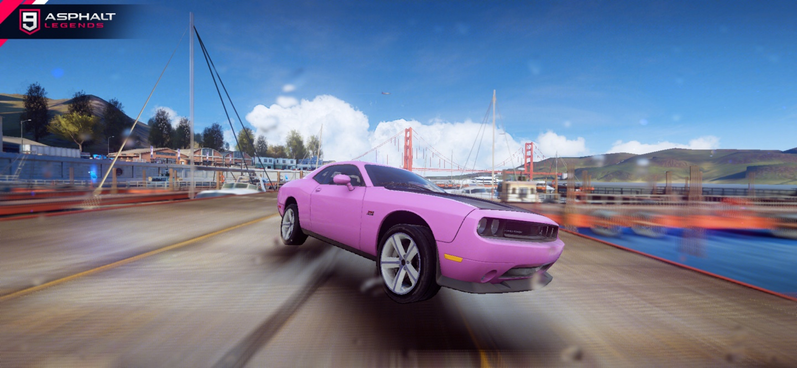
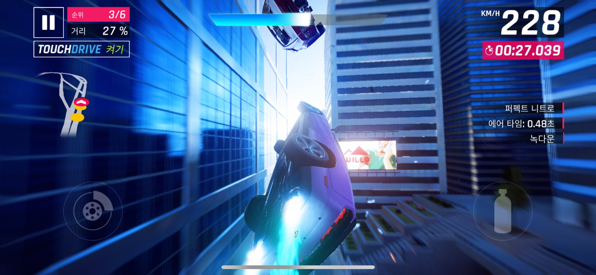
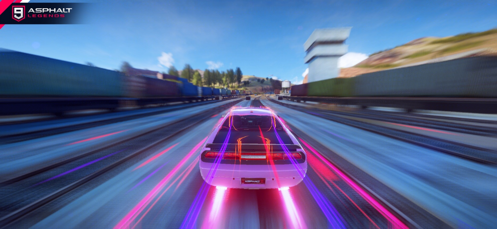
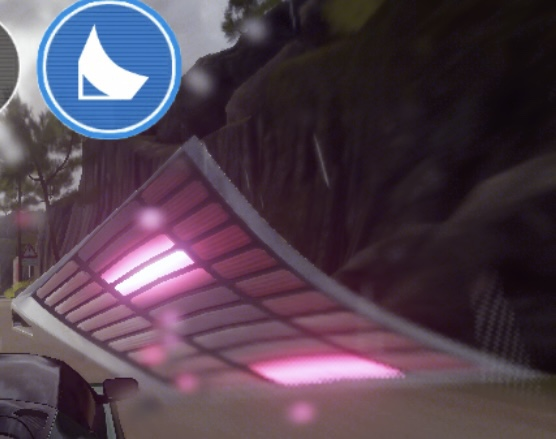

| 게임 제목 | 아스팔트 9: 레전드 |
| 게임 특징 |
- 수많은 자동차들과 그 자동차들을 위한 다양한 레이싱 트랙 - 실제로 존재하는 자동차들에서 가져온 모델링으로 더욱 현실감 있는 플레이가 가능 - 직접 커스터마이징 가능한 차량들 |
| 선정 이유 |
- PC와 모바일을 모두 지원하는 크로스 플랫폼 게임 - 쉽고 단순한 조작 방식을 가지고 있음 - 다양한 자동차 스턴트 액션이 있음 - "니트로" 시스템을 통한 속도감 있는 게임 플레이 |
- 자동차 스턴트 액션의 종류, 주행 중 등장하는 게임 내 오브젝트와의 상호작용에 관해
중점적으로 분석
챕터 1을 클리어함으로써 해금되는 몇몇 자동차들을 얻기 위함 및, 게임을 충분히
분석하기 위해 한 챕터를 모두 클리어 하는 것을 목표로 삼음
- 1회 주행 후 게임 내 리플레이 재생 기능을 통해 주행 영상을 보면서 분석
- "리그" 한 개를 처음부터 끝까지 플레이하며 게임을 분석함.
각각의 스테이지를 "리그" 라는 단위로 묶어서 구분하며, 각각의 리그는 "챕터" 로 관리되고 있음
|  | 드리프트 흔히 "드리프트" 하면 떠올리는 그 액션으로, 급격한 커브의 트랙 에서 속도감을 잃지 않으며 주행하기 위한 기술이며, 사용 시 속도는 다소 줄어들지만, "니트로 게이지" 가 채워짐 |
|---|---|
|  | 360 드리프트 버튼을 연타하는 것으로 사용 가능한 액션이며, 사용 시 yaw 방향으로 360도 회전하며 "니트로 게이지" 를 채우고, 주위에 차가 있을 경우 파괴하며, 공중을 활강하기 직전에 사용할 경우 활강하면서 회전함 |
|  | 배럴 롤 게임 내에 존재하는 "기울어진 점프대"를 통해 점프할 경우 볼 수 있으며, 사용 시 roll 방향으로 회전하며 활강함 또한 회전하는 횟수는 시전시 차량 속도에 따라 달라지며, "니트로 게이지" 를 채워줌 |
|  | 니트로 "니트로 게이지" 를 채움에 따라 사용이 가능하며 니트로 게이지의 양에 따라 니트로 / 퍼펙트 니트로 / 니트로 쇼크 웨이브 의 3가지로 나뉘며 사용 시 이펙트가 달라짐 |
| 니트로
획득할 경우 니트로 게이지를 채워줌 |
|
| 점프대
자동차가 이 오브젝트 위를 지나갈 경우 |
|
|  | 기울어진 점프대
일반적인 점프대와 다르게 살짝 기울어져 있으며 |
| 시계
타임 어택 모드에만 존재하며, 획득하게 되면 |
아스팔트 9에는 니트로 쇼크 웨이브,
혹은 360을 사용하는 도중에
경쟁차량과 부딪힐 경우, 부딪힌
경쟁차량을 파괴하는 시스템이
존재한다.
차량을 파괴 할때, 파괴 되는
차량에 카메라가 맞춰지며
잠시 슬로우 모션을 거는데,
이를 통해 단지 속도감 뿐만 아니라,
다른 차량들을 파괴하는 쾌감까지도
더하며 보다 게임을 다채롭게
만들어준다.
아스팔트 9 의 니트로 시스템은
다른 레이싱 게임들에도 흔히
존재하는 니트로 시스템이다.
아스팔트 9 만의 차별점이라고 하면
일반적으로 잠깐 부스팅하고 끝나는
다른 니트로 시스템들과는 다르게
니트로 게이지가 채워진 양과
터치하는 타이밍에 따라 니트로를
니트로 / 퍼펙트 니트로 /
니트로 쇼크 웨이브의 3단계로
나눠서 사용할 수 있다.
니트로를 사용하게 되면 약간의
줌 인 효과와 함께 테두리에
모션블러 효과가 생기며
게임에 속도감을 더해준다.